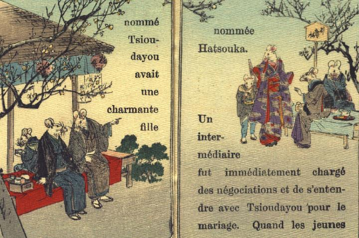

梅が咲く茶屋で、鼠たちがお見合いをしている。娘鼠とその付き添いたちは画面右側におり、婿となる鼠とその付き添いは左側の廂の下に腰かけている。娘は立って、婿たちの方を見ている。婿となる鼠は、隣に座った鼠に、見合いの相手が誰か教えてもらっている。
著作者：J.Dautremer／出典：親書誌：U426_nichibunken_0111：Le mariage de la souris／日付：2006／資源識別子：U426_nichibunken_0111_0003_0000
Copyright (c)2010- International Research Center for Japanese Studies, Kyoto, Japan. All rights reserved.